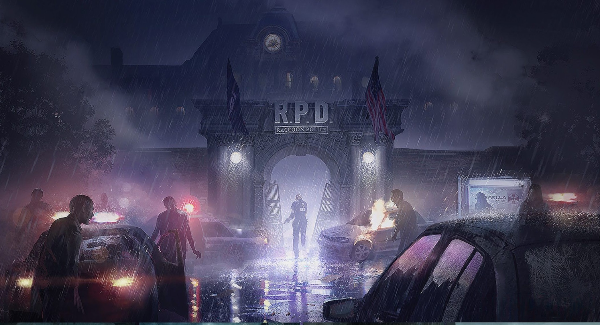

1998
Начало пути
Раккун-Сити, США
Инцидент в Раккун-Сити
Молодой полицейский приезжает на первый рабочий день в город, охваченный вирусной вспышкой. Первое задание Леона становится борьбой за выживание.
Resident Evil 2

Читать подробнее
Раккун-Сити, США
Инцидент в Раккун-Сити
Молодой полицейский приезжает на первый рабочий день в город, охваченный вирусной вспышкой. Первое задание Леона становится борьбой за выживание.
Resident Evil 2
Хроника инцидента / сентябрь 1998
В Раккун-Сити Леон встречает Клэр Редфилд и вместе с ней пытается выбраться из города. По пути он сталкивается с последствиями экспериментов корпорации «Амбрелла», помогает Аде Вонг и спасает Шерри Биркин.
Ключевые участники
Клэр Редфилд · Ада Вонг · Шерри Биркин
Итог
Побег из Раккун-Сити